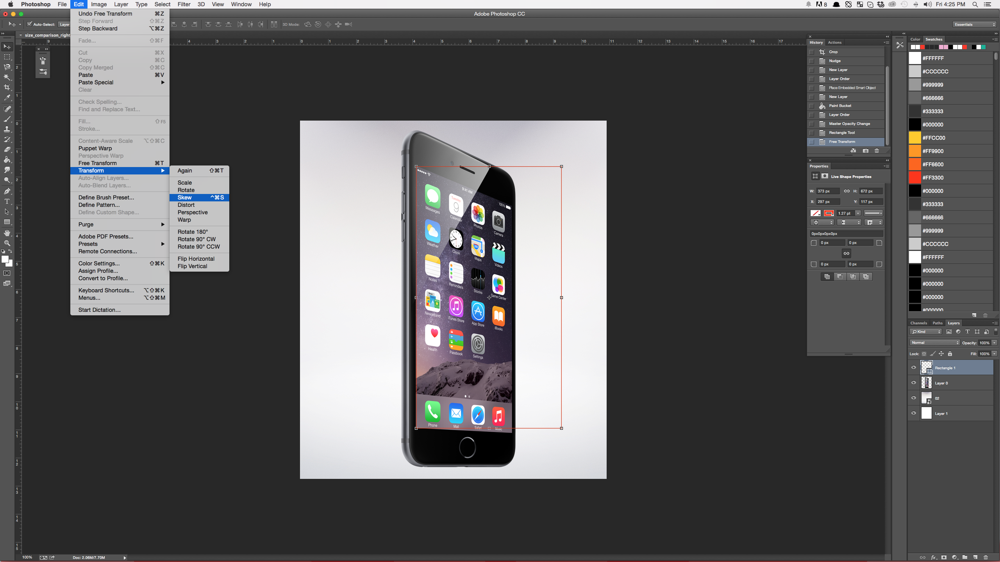
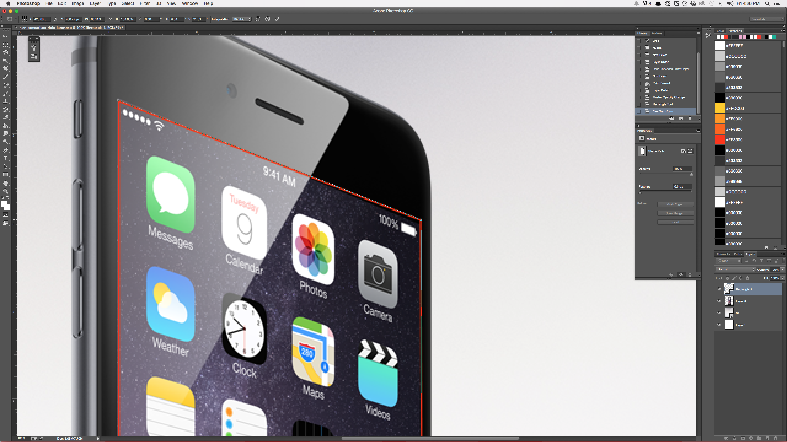

TUTORIAL // USING SMART OBJECTS TO CREATE MOCKUPS IN PHOTOSHOP
JUNE NINETEENTH, TWENTY FIFTEEN
As I mentioned in my previous blog post, I've decided to sprinkle in some tutorials here and there just to keep things interesting. Actually, in reality, I did a lot of my design learning by looking for tutorials and posts like these to accomplish whatever task I happened to have at hand. Strangely enough, more often than not I would usually end up just trying to figure stuff out on my own, which I EXTREMELY encourage you to do. The software used for design is complex, and full of idiosyncrasies that can really only be found through your own exploration. That having been said, I realize that sometimes that just doesn't cut it, so hopefully the tutorials I post will be straightforward enough for a beginner to use, and technical enough to teach you how to do it from here on out. I'm just trying to teach the things I had to learn on my own.
First ups! Mock ups! What ups!
Now, one of the greatest tools I have found in my experience of working with clients is that its hard for people to visualize the implementation of a design. Yeah, a logo can look great on paper, but there really is something EXCITING about seeing it on a screen, shirt, or billboard. Obviously you can't always rent a billboard to provide a proof of concept for your client, but with a little Photoshop magic, mock-ups can come to your aid and rescue.
The best way about doing it the way I'm going to show you is that we'll essentially create it in a way that allows you use it for forever after. None of this one and done bull. Once you create a mock up for, lets say an iPhone 6 Plus, you'll have that and be able to swap out designs for the eternities that follow.
So, fire up ye old Photoshop, and lets get started.
Okay, so here is the image I want to mock up. Its a re-imagining of the iPhone home screen, if it was running old school Mac OS, because why not? (We'll talk about pixel art at a future date.)
If at all possible, the earlier you determine the dimensions or ratio of your screen/billboard/area, the easier its going to be to design for that space, AND for creating the objects needed in Photoshop down the road. I know what the dimensions of an iPhone 6 + are, so I designed to fit that restraint. If possible I STRONGLY suggest you do the same.
Open Photoshop, and the image you want to create your mock up with.
I lifted this one straight from Apple's website, but high resolution photos of pretty much anything you would want to mock up exist. Find them, and open them in Photoshop. Once that ish is open, grab yourself the shape tool, and draw a rectangle. If you know the dimensions you're working with (WHICH YOU SHOULD), you can click once, type in the increments, and BAM, scale that sucker to fit.
In case you haven't figure it out, we're going to draw a box or object over the screen we wish to mock up.
After you've got your rectangle drawn, you're going to head over to the layers menu and left (or command) click the layer that is your shape. You will select "Convert to Smart Object."
Once you've got your smart object officially created, you're going to tweak it to fit whatever it is you're trying to mock up. For this example, I was able to do it with a simple "Skew."
 
After you've done all of that, it should look something like this:
Here's where the magic happens! Left click your smart object layer, and select "Edit Contents."
Thats going to open up a new canvas, which should look like this.
So, in very general terms, when you create a Smart Object, you're essentially creating a canvas on top of your canvas. Or something.
Anyway, at this point, you're going to paste, place, or embed whatever it is you want to use for your mockup. Make sure to turn off the layer that has the border from your shape, if you have one.
You'll save this canvas, and go back to your original mock up. I'm not sure why, but I took a picture of this when I did it, so I might as well use it I guess.
Ka-ching! Look at that wonderfulness! You've got yourself a pretty decent mock up, friend.
If your screen has any sort of glare, go ahead and recreate it, if possible. Even if you don't, you've got a mock up good enough to send most clients to give them some contextual ideas.
The best part? You can just save this, and swap out the contents of your smart object any time you need to mock something up. Seriously! Its that easy! And it makes pretty much anything you do look a KAJILLION times better.
Thats how you use a Smart Object in Photoshop to create a mock up template that you'll be able to use to look like a freaking pro whenever you need to.
Use this power responsibly! I know I try to...
Have an idea for something you would like to see in a tutorial, or questions about this one?
Head over to my contact page and shoot me a message. I'm here to help!